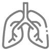

۰۱
پودر ژلکننده
مایعات به ژل تبدیل میشوند؛ حمل ایمنتر و ریسک نشت کمتر.
یکبار مصرف، فیلتر هیدروفوبیک، پودر ژلکننده — برای ICU، اتاق عمل و اورژانس.
مدل واقعی — درگ با موس یا لمس، در همه جهتها

افقی ورق بزن
مایعات به ژل تبدیل میشوند؛ حمل ایمنتر و ریسک نشت کمتر.
جلوگیری از سرریز و حفاظت از سیستم ساکشن مرکزی.
پرتابل و سانترال — بدون آداپتور خاص.
کنترل عفونت؛ بدون شستوشو و بار کمتر برای پرسنل.
تا ۸ لیتر یکردیفه و ۱۶ لیتر دوردیفه روی یک پایه.
۴۵ عدد در کارتن · ۵۷.۵ × ۴۲.۵ × ۴۴ cm
| کد محصول | IRC | سایز | نوع فیلتر | پودر | رنگ درب |
|---|---|---|---|---|---|
| ۰۴۰۱۱۱۲ | 9647935197253589 | دو لیتری | هیدروفوبیک | ✓ | |
| ۰۴۰۱۱۰۲ | 5826314295044204 | دو لیتری | × | ✓ | |
| ۰۴۰۱۰۱۲ | 4383099410749165 | دو لیتری | هیدروفوبیک | × | |
| ۰۴۰۱۱۳۲ | 4111380328256244 | دو لیتری | مکانیکی | ✓ | |
| ۰۴۰۱۱۱۲ | 9647935197253589 | دو لیتری | CIF | ✓ |
تولید شرکت دانشبنیان مخازن طبی آبادیس برای کنترل عفونت و ایمنی جریان کار در مراکز درمانی
کیسههای ساکشن آبادیس در حجمهای یک، دو و سه لیتری تولید میشوند و دارای سه نوع فیلتراسیون هیدروفوبیک، دوئال و مکانیکی هستند.
ویژگیهای مشترک: پودر ژلکننده، جلوگیری از سرریز مایعات، سازگاری با کلیه دستگاههای ساکشن، سیستم حفاظت از ساکشن مرکزی.
قابل نصب بهصورت تکی و سری روی پایه ثابت (دیواری) و پرتابل — نصب و خدمات پس از فروش رایگان.
حجم ساکشن: یک لیتر
مشخصات: پودر ژلکننده، فیلتر هیدروفوبیک، سازگار با کلیه دستگاههای ساکشن، حفاظت از ساکشن مرکزی
انواع فیلترهای کیسههای نهایی: فیلترهای استفادهشده در کیسههای آبادیس در ۳ نوع تولید میشود که موجب جلوگیری از سرریز مایعات میگردد: فیلترها
برای مشاهده نحوه استفاده از کیسه ساکشن ها به این صفحه مراجعه نمایید.
| کد محصول | IRC | سایز | نوع فیلتر | پودر | رنگ درب |
|---|---|---|---|---|---|
| ۰۴۰۱۱۱۱ | 6952056777153306 | یک لیتری | هیدروفوبیک | ✓ | |
| ۰۴۰۱۰۱۱ | 7817505042353929 | یک لیتری | هیدروفوبیک | × |
 آمبولانس
آمبولانس عفونی
عفونی دندانپزشکی
دندانپزشکی چشم
چشم کودکان
کودکانمشخصات: پودر ژلکننده، فیلتر هیدروفوبیک (جلوگیری از سرریز)، سازگار با کلیه دستگاههای ساکشن، سیستم حفاظت از ساکشن مرکزی
انواع فیلترهای کیسههای نهایی: فیلترهای استفادهشده در کیسههای آبادیس در ۳ نوع تولید میشود که موجب جلوگیری از سرریز مایعات میگردد: فیلترها
برای مشاهده نحوه استفاده از کیسه ساکشن ها به این صفحه مراجعه نمایید.
| کد محصول | IRC | سایز | نوع فیلتر | پودر | رنگ درب |
|---|---|---|---|---|---|
| ۰۴۰۱۱۱۲ | 9647935197253589 | دو لیتری | هیدروفوبیک | ✓ | |
| ۰۴۰۱۱۰۲ | 5826314295044204 | دو لیتری | × | ✓ | |
| ۰۴۰۱۰۱۲ | 4383099410749165 | دو لیتری | هیدروفوبیک | × | |
| ۰۴۰۱۱۳۲ | 4111380328256244 | دو لیتری | مکانیکی | ✓ | |
| ۰۴۰۱۱۱۲ | 9647935197253589 | دو لیتری | CIF | ✓ |

ریه و آندوسکوپی گوارش
گوارش CCU / ICUعفونی
CCU / ICUعفونی بخش مردان
بخش مردان بخش زنان
بخش زنانحجم ساکشن: ۳ لیتر در حالت تکی، تا ۱۲ لیتر در حالت سری یک ردیفه بر روی پایه
مشخصات: دارای پودر ژلکننده، فیلتر هیدروفوبیک(جلوگیری از سر ریز مایعات)، سازگار با کلیه دستگاههای ساکشن، دارای سیستم حفاظت از ساکشن مرکزی
انواع فیلترهای کیسههای نهایی: فیلترهای استفادهشده در کیسههای آبادیس در ۳ نوع تولید میشود که موجب جلوگیری از سرریز مایعات میگردد: فیلترها
برای مشاهده نحوه استفاده از کیسه ساکشن ها به این صفحه مراجعه نمایید.
کیسه ساکشن استریل آبادیس مناسب برای عملهای لیپوساکشن و سایر عملهای جراحی حساس است.
مزایا:
| کد محصول | IRC | سایز | نوع فیلتر | پودر | استریل | رنگ درب |
|---|---|---|---|---|---|---|
| ۰۴۰۱۱۱۳ | 6579214989949869 | سه لیتری | هیدروفوبیک | ✓ | × | |
| ۰۴۰۱۱۰۳ | 3226257467113524 | سه لیتری | × | ✓ | × | |
| ۰۴۰۱۰۱۳ | 7600653363719319 | سه لیتری | هیدروفوبیک | × | × | |
| ۰۴۰۱۱۲۳ | 7600653363719319 | سه لیتری | Dual | ✓ | × | |
| ۰۴۰۱۱۳۳ | 2707894365287680 | سه لیتری | مکانیکی | ✓ | × | |
| ۰۴۰۱۲۱۳ | 9787915172873298 | سه لیتری | هیدروفوبیک | ✓ | × | |
| ۰۴۰۱۱۱۳-۲ | _ | سه لیتری | هیدروفوبیک | ✓ | ✓ | |
| ۰۴۰۱۱۱۳ | 6579214989949869 | سه لیتری | CIF | ✓ | × |
عفونی اتاق عمل
اتاق عمل قلب و عروقبخش مردانبخش زنانعمل لیپوساکشن
قلب و عروقبخش مردانبخش زنانعمل لیپوساکشنفیلترهای استفادهشده در کیسههای آبادیس در ۳ نوع تولید میشود که موجب جلوگیری از سرریز مایعات میگردد.


فيلتر آنتی باکتریال بین مسیر شلنگ ساکشن تا مخزن قرار میگیرد و از خروج ميکروارگانيزمها، میکروبها و باکتریها به طرف منبع ساکشن جلوگيري ميکند و بدين ترتيب محيط به ميکروارگانيزمهاي خطرناک داخل مايعات ساکشن آلوده نميشود. همچنین این فیلتر توانايي فيلتراسيون ميکروارگانيزمها تا ۰.۰۳ ميکرون را داراست. اين ويژگي از انتشار عفونتهاي خطرناک در بخش مراقبت ويژه يا اتاق جراحي جلوگيري ميکند و ريسک ابتلاي بيمار را به عفونتهای بیمارستانی تا حد زيادي کاهش ميدهد. جهت جلوگیری از انتقال عفونت باید بعد از ترخیص بیمار فیلتر تعویض گردد.


کیسههای ساکشن یکبار مصرف دارای یک فیلتر برای جلوگیری از سرریز شدن مایعات ساکشن شده است این فیلترها مکانیزم مهمی برای جلوگیری از انتشار مایعات آلوده است که از موادی با جنس آبگریز یا هیدروفوبیک ساخته شده که با رسیدن مایعات به سطح فیلتر عمل ساکشن را قطع میکند و مانع از آسیب زدن به دستگاه ساکشن میشود.
فیلتر داخلی از فیلترهای تولید شده متخلخل آبادیس است و جنس قاب فیلتر قطع کننده جریان (مسدود شونده) از پلی کربنات میباشد.
فیلترهای متخلخل به طور گسترده در تجهیزات پزشکی و آزمایشگاهی مورد استفاده قرار میگیرند؛ و جنس این فیلترها از پلی اتیلن سنگین (UHMW-PE) میباشد.
فیلترهای متخلخل به محض مرطوب شدن منافذ آنها توسط دانههای پلیمری متورم شده و بسته میشود و از خروج مایعات جلوگیری مینماید.
در هر کارتن کیسههای ساکشن یکبار مصرف برای هر سه سایز معمولاً ۴۵ عدد است (فیلتر مکانیکی: ۳۰ عدد در کارتن)